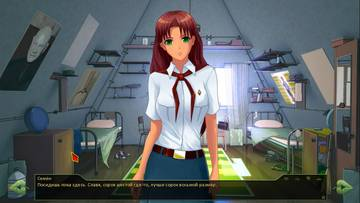
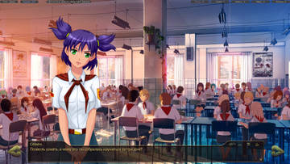
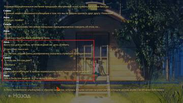

dxe написал(а):
Есть профильная ветка?
Ветку Нуар-рута можете считать профильной по Герку.

7 дней лета |
Вы здесь » 7 дней лета » Логика » Нестыковки

Есть профильная ветка?
Ветку Нуар-рута можете считать профильной по Герку.
В первый день за дрища, при встречи с ОД она говорит от имени Семёна 

При прохождении ОД-рута за Дрища у галстука были замечены магические свойства!
Мику-dj
После игры в волейбол (день 4, обед) подряд идут 2 фразы, одна из них , возможно , не к месту
1.Все пионеры разошлись, остался только я...
2.И ,когда Ульяна покатила мячик в дом, вслед за ней разошлись остальные пионеры, поняв, что шоу на сегодняшний день завершилось, на скамеечках остались только мы с Леной

Не уверен, является ли это ошибкой или все так и задумано (что более вероятно), но решил все-таки отметить. Когда я играл за Локи и пометил карты (за счет кармы), то в финале турнира карты перестали быть краплеными и пришлось играть "по-честному".

Баг. Как исправить, пока не знаю.

Баг. Как исправить, пока не знаю.
Товарищ Автор, разрешите предложить вариант решения.
Сейчас перед первым туром и полуфиналом происходит следующая проверка:
if alt_day2_walk == 0:
$ VISIBLE = True
$ INVISIBLE = True
else:
$ VISIBLE = True
$ INVISIBLE = FalseСудя по коду оригинального турнира, "VISIBLE" - это видимость своих карт, а "INVISIBLE" - видимость карт противника.
В финале такой проверки нет:
label alt_day2_final_start:
#Финал 1 против 3 — 960,430
#Финал 2 против 4 — 960,643
#Победитель 1121,530
if alt_day2_f2 == 3:
if alt_day2_walk == 0:
"Но прежде, чем она всё началось, Алиса с подозрением оглядела карты, которыми мы играли."
th "Неужели…"
"По спине пробежал холодок…"
"А она слегка перегнулась через стол и, лукаво улыбаясь, спросила шёпотом — так, что слышать её мог только я…"
show dv smile pioneer2 with dissolve
dv "Так ты все карты пометил, да?"
dv "Предусмотрительный…"
th "Она знала, что я жульничал!!!"
"Я покраснел."
th "Если сейчас она встанет и скажет всем…"
th "Это будет ужасно!!!"
th "Невыносимо!!!"
th "Кошмарно!!!"
"Но Алиса, кажется, и не думала выдавать меня…"
"Она улыбалась!"
dv "Надеялся и меня так обыграть?"
"И я, проклиная свою честность, тоже шёпотом, ответил:"
me "Да…"
"Она фыркнула, впрочем, совсем беззлобно."
dv "Даже не мечтай…"
"Незаметно для зрителей она достала из кармана совершенно новую колоду карт и поменяла её местами с помеченной мной…"
dv "Играть будем моими!"
"Она довольно улыбнулась."
dv "Я тоже предусмотрительная…"
"Игра началась."
window hide
$ INVISIBLE = FalseТам в принципе отключается возможность видеть карты противника, вне зависимости от чего-либо. При этом, проверка на Алису неправильная, так как alt_day2_f2 - это соперник второго тура, который обыграл Семёна и прошёл в финал, а соперник Семёна в финале - alt_day2_f1. Если в проверку поставить alt_day2_f1, то раскрытие Алисой крапа будет работать. Соответственно, $ INVISIBLE = False можно убрать под ту же проверку, а для варианта else к ней использовать стандартную конструкцию, которая есть в 1-2 турах.
В результате получится следующее:
label alt_day2_final_start:
#Финал 1 против 3 — 960,430
#Финал 2 против 4 — 960,643
#Победитель 1121,530
if alt_day2_f1 == 3:
if alt_day2_walk == 0:
"Но прежде, чем она всё началось, Алиса с подозрением оглядела карты, которыми мы играли."
th "Неужели…"
"По спине пробежал холодок…"
"А она слегка перегнулась через стол и, лукаво улыбаясь, спросила шёпотом — так, что слышать её мог только я…"
show dv smile pioneer2 with dissolve
dv "Так ты все карты пометил, да?"
dv "Предусмотрительный…"
th "Она знала, что я жульничал!!!"
"Я покраснел."
th "Если сейчас она встанет и скажет всем…"
th "Это будет ужасно!!!"
th "Невыносимо!!!"
th "Кошмарно!!!"
"Но Алиса, кажется, и не думала выдавать меня…"
"Она улыбалась!"
dv "Надеялся и меня так обыграть?"
"И я, проклиная свою честность, тоже шёпотом, ответил:"
me "Да…"
"Она фыркнула, впрочем, совсем беззлобно."
dv "Даже не мечтай…"
"Незаметно для зрителей она достала из кармана совершенно новую колоду карт и поменяла её местами с помеченной мной…"
dv "Играть будем моими!"
"Она довольно улыбнулась."
dv "Я тоже предусмотрительная…"
"Игра началась."
$ INVISIBLE = False
else:
if alt_day2_walk == 0:
$ VISIBLE = True
$ INVISIBLE = True
else:
$ VISIBLE = True
$ INVISIBLE = FalseРезультаты проверки этого на работоспособность:
upd:
Строго говоря, эта штука там даже не нужна, как и в полуфинале:
if alt_day2_walk == 0:
$ VISIBLE = True
$ INVISIBLE = True
else:
$ VISIBLE = True
$ INVISIBLE = FalseОдного раза в 1 туре должно хватать, ведь дальше эти переменные не меняются, кроме как в финале с Алисой.
Отредактировано Sitzileon (2017-07-16 22:53:26)
Алиса 7дл. Виола увозит Шурика, но позже, на свечке в 5ом дне, оказывается, что она просто перевязала ему руку и оставила в лагере.
на свечке в 5ом дне, оказывается, что она просто перевязала ему руку и оставила в лагере
Не так. Просто уже они вернулись из города. После чего Виола меняет Шурику повязку, а Сеня в это время или трапезничает в столовке, или спит в "Волге".
Отредактировано LRS (2017-07-22 06:18:43)

Уберу под спойлер на всякий случай:
Вот не стыкуется у меня то, что в сюжетке Мику-7ДЛ Лена курит. Да, теоретически она может курить и пить алкоголь, но не ради баловства. От обиды, от злости, от безысходности. Но не в открытую перед всеми, и тем более не ради баловства, как Алиса.
Станиславское: "Не верю!", сразу всплыло при прочтении.
Уберу под спойлер на всякий случай:
Свернутый текст
А то что Непогрешимая с ДваЧе в карты играет, это нормально?

А то что Алиса так открыта перед всеми?
Мне, честно, та сцена в домике вообще не понравилась. Она скучная, нудная, и противоречит многим другим событиям в моде.

Уберу под спойлер на всякий случай:
Свернутый текстВот не стыкуется у меня то, что в сюжетке Мику-7ДЛ Лена курит. Да, теоретически она может курить и пить алкоголь, но не ради баловства. От обиды, от злости, от безысходности. Но не в открытую перед всеми, и тем более не ради баловства, как Алиса.
Станиславское: "Не верю!", сразу всплыло при прочтении.
Непогрешимого идеала нету же, та же физиология чего стоит.
В третьем дне во время танцев, даже если на первый не приглашать Лену, а на второй её выбрать будет фраза:
"Я думал пригласить Лену ещё раз, но...".
Второй день. Не спорим с Алисой перед турниром, в финале проигрываем Лене, не гонимся за Ульяной. Двачевская отводит нас на улицу, после чего выбираем "да в чем дело то". Как итог у нас спринтерский забег по лагерю и дальнейшее купание в руке. Вечером идем к домикудомику Лены и видим: "в любом случае, я уселся на пресловутую скамеечку и неспешно поедая остатки торта, принялся ждать". Какой-то больно живучий тортик попался
1й день, знакомство с электроником
его имя написано в этой штуке с диалогами до того как он представился
Конец третьего дня, медпункт с Леной. Проигрываем в покер, после Лена возвращает одежду. Следом идет "я отдал ей одежду, а сам между делом решил заглянуть туда, куда нам советовала заглянуть сестра". Тут либо с флагом выигрыша/проигрыша в покер косяк, либо логика поехала
Лена 7дл, старт за Локи, пятый день. ОД с утра говорит, мол, дождевиков нет, мокните как хотите. После ужина же Семен в домике берет дождевик перед походом. Мелочь, а малость колется.
Ну и собственно само начало пятого дня, нет звуков дождя. (Что собственно завезено в другие руты)
Отредактировано mrucher (2017-11-17 17:33:14)
Старт за Герка. При наборе макс ЛП Лены не конфликтующих с выходом на рут Алисы (2-14) на 4 день запускается рут одиночки. Последняя версия на андроид
Отредактировано AlienRain (2017-11-26 07:10:33)
Старт за Герка. При наборе макс ЛП Лены не конфликтующих с выходом на рут Алисы (2-14) на 4 день запускается рут одиночки. Последняя версия на андроид
Отредактировано AlienRain (Сегодня 09:10:33)
Там вроде есть пара обязательных условий, которые нужно выполнить, кроме ЛП. Возможно одно какое-то пропустили. Тоже страдал от этого 

Приветствую.
У меня вот возник вопрос: дрищ в прологе выдал эдакую цитату:
"Я сам выбрал эту петлю — я не люблю людей. Не поддерживаю контакты, не пью на корпоративах и не [предаюсь плотским утехам в грубой форме] там же, не выбираюсь на чатовки и вечера встречи выпускников."
"Если мы с вами учились в одном классе или школе — то я не стану орать при встрече «здорово, браток»."
"Нет, я вздрогну и перейду на другую улицу. Вы прошлое. Вы меня раздражаете."
Тем не менее, в тот же день он предпочитает обществу анонимусов своих (бывших) однокурсников. Почему?
И ещё: в руте ДваЧе дрищ сказал про 7 дней, отведённых ему, но про последнюю неделю был ни сном, ни духом. Может быть, я что-то не просёк, или это ошибка?
Приветствую.
У меня вот возник вопрос: дрищ в прологе выдал эдакую цитату:
"Я сам выбрал эту петлю — я не люблю людей. Не поддерживаю контакты, не пью на корпоративах и не [предаюсь плотским утехам в грубой форме] там же, не выбираюсь на чатовки и вечера встречи выпускников."
"Если мы с вами учились в одном классе или школе — то я не стану орать при встрече «здорово, браток»."
"Нет, я вздрогну и перейду на другую улицу. Вы прошлое. Вы меня раздражаете."
Тем не менее, в тот же день он предпочитает обществу анонимусов своих (бывших) однокурсников. Почему?
нет там однокурсников.
7dl-kun
Боже, пора бы уже заканчивать с основным сюжетом...
Извиняюсь, обознался! 
Отредактировано kingruseek (2017-12-05 23:40:26)
Перепроходил рут Алисы по определённым причинам и вышел на сценку с Мику во время дискотеки, где Семён... разбавил обстановку музычкой, после чего ещё показал средний палец весьма недовольний вожатой. А спустя пару строчек она как ни в чём не бывало позвала его на танцы...
Такой вопрос, это так и должно быть?
ЛП могу указать чуть позже, если надо.
Отредактировано Regolas (2017-12-12 15:29:06)

El Jorge написал(а):
Уберу под спойлер на всякий случай:
Свернутый текстСвернутый текст
А то что Непогрешимая с ДваЧе в карты играет, это нормально?
Подпись автора
А из синей чащи,
Как из-за кулис,
Смотрит одичавший
Рыжий старый лис.
Она не непогрешимая, она просто любимая. А в карты играет весь отряд, плюс Лена еще и с Семеном в медпункте на раздевание.
Сёма вроде в курсах, а вроде и нет. ПСР в действии?  
Эммм, почему "каша" исчезла в Славя-КЛ?
Эммм, почему "каша" исчезла в Славя-КЛ?
Кашка - сущность самостоятельная, хочет - вылазит из шахты, хочет - прячется... Хотя я б на месте порриджа тоже от Ульянки спрятался)
Вы здесь » 7 дней лета » Логика » Нестыковки